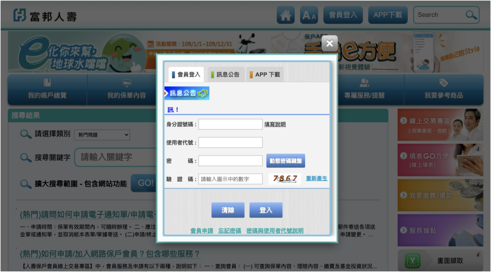
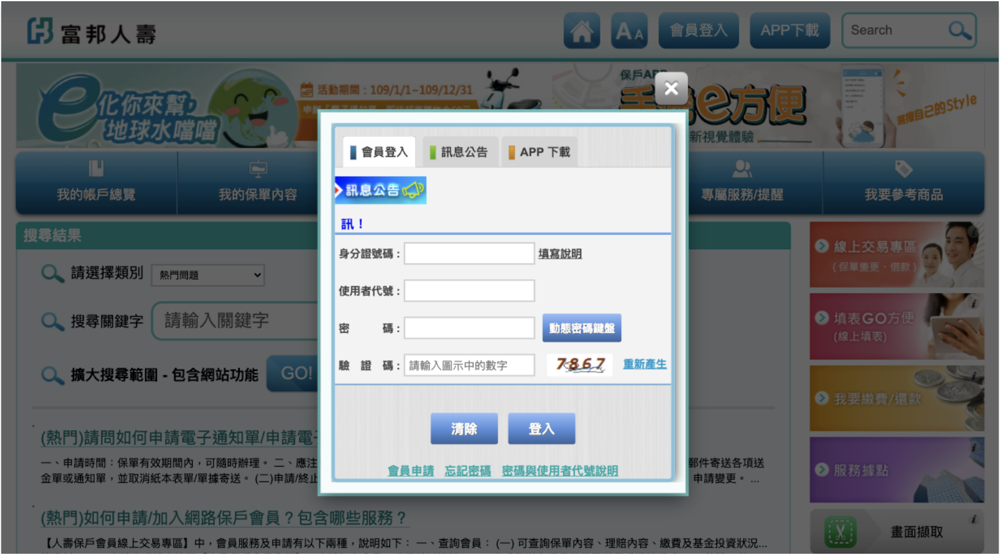
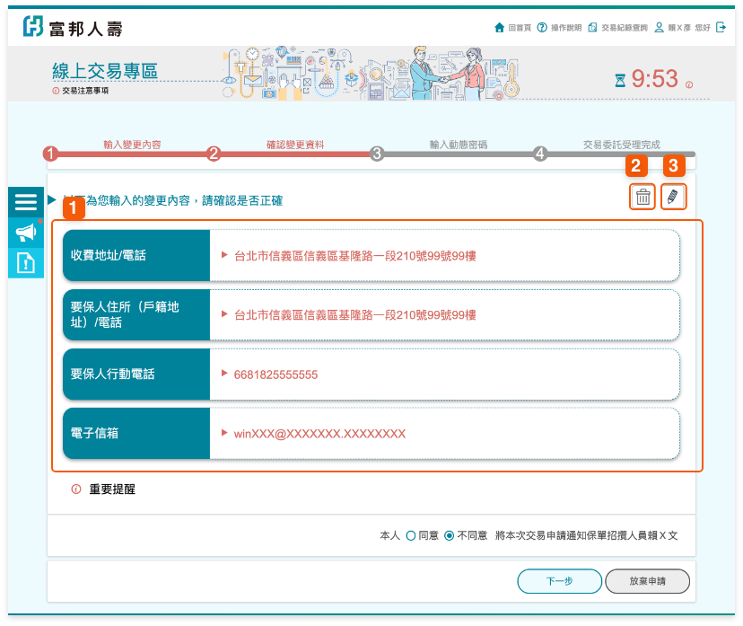
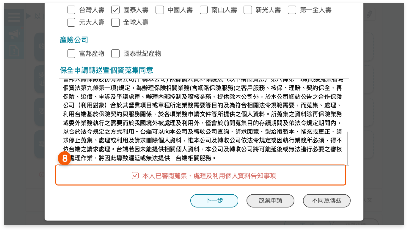
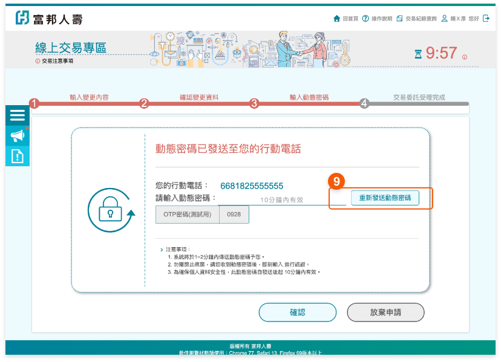

變更流程
步驟一 :
由【富邦人壽官網】，點選 保護會員專區登入。 

步驟二 :
點選「線上交易」，保護需先申請成為交易會員方可於網路 變理變更。
步驟三 :
點選後進入「多張保單地址 / 電話 / E-mail 變更」 作業。
步驟四 :
確認顯示的行動電話及電子信箱是否為最新資料，若需修改請點選修改。
步驟五 :
請點選即可輸入欲變更之內容。
步驟六 :
1 : 確認變更內容。2: 點選
3 : 點選可回此變更項目輸入修改變更內容。

步驟七 :
請審閱重要提醒，確認無誤後請勾選口我已了解並同意後，點選確認進入下一步。
步驟八 :
請確認本次辦理變更資料，是否傳送至其他保險公司申辦相同變更項目。
步驟九 :
如同意傳送至其他保險公司，請選擇欲傳送之保險公司(可複選)。＊僅提供有加入試辦之保險公司，請勾選有該公司保單之保險公司。

步驟十 :
請審閱保全申請轉送個人資料告知事項，審閱完成後，請點選本人已審閱蒐集，處理及利用個人資料告知事項，如取消轉送，請點選不同意傳送，可回至確認是否同意轉送頁重新選擇。

步驟十一 :
輸入動態密碼，未收到動態密碼，可點選重新發送動態密碼。

步驟十二 :
委託受理完成，可點選 列印內容，產出加密之PDF檔，密碼為要保人身分證字號，第一個英文字母大寫。